The deck from class, as a page: every slide, its notes and its diagrams. A faithful copy — you do not need the .pptx file.
Guessing What Comes Next
- Forecasting a series: read the past, continue the story
APPLICATIONS OF MATHEMATICS IN INDUSTRY Module 3 — Financial Mathematics & Quant Analytics · Session S15 · 2 hours Module 3 — forecasting a time series
The problem: how many air-conditioners to ship
- An AC brand must decide this month how many units to send to its Delhi and Mumbai warehouses for next month.
- Ship too few and the summer rush sells out — customers walk to a rival.
- Ship too many and cash sits frozen as stock in a godown.
- Nobody knows next month's demand. But they DO have years of past monthly sales in a spreadsheet.
- The whole job: read that past honestly, and guess the next few months.
The one idea, in a single picture
- Each point is one past month's sales.
- There is a slow drift up: the trend.
- A bump repeats every summer: the season.
- Forecasting = continue that shape into the future (the red dashed line).
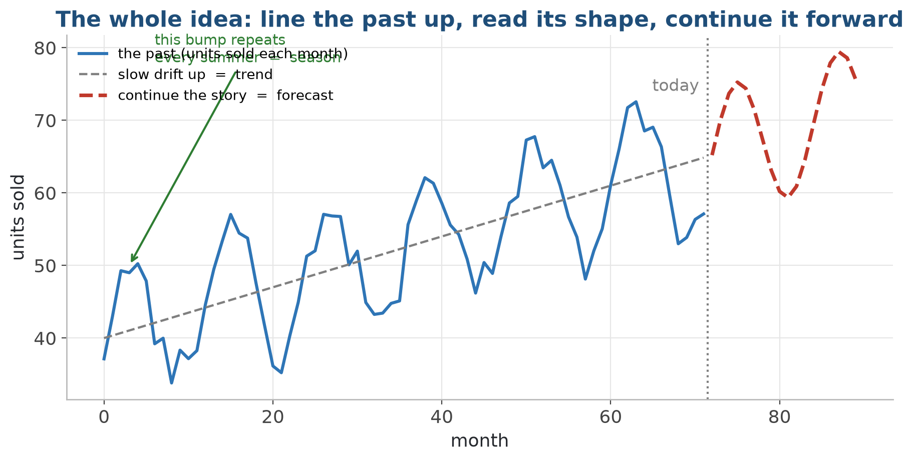
Line the past up in time, read its shape, then continue that shape forward.
Why it works at all: today usually leans on the recent past. Today can lean on recent DAYS (that is AR), or on recent SURPRISES (that is MA).
What we'll cover
- 1 The problem and the one idea (done — that was the big picture)
- 2 A series is three simple things: trend + season + noise
- 3 Two ways today leans on the past: AR and MA
- 4 Flattening a trend, then putting it together as ARIMA
- 5 A gentler idea: exponential smoothing (Holt-Winters)
- 6 Honesty: a forecast is a fan, not a line — then the lab
Where we are — building on last session
- Last session we met financial data: how to pull it, and how to turn prices into returns.
- We met the idea of a 'stationary' (flat, well-behaved) series, and the autocorrelation plots (ACF / PACF).
- Those were the tools. Today is the job they were built for: FORECASTING.
- We build the two classical machines — ARIMA and exponential smoothing — and the honest habit of testing them on data they never saw.
1 · What forecasting is, in plain words
What forecasting actually means
- A time series is just a column of numbers with a clock attached — one value per day, hour, or month.
- Forecasting asks for the NEXT few values, before they happen.
- The catch: the only clue we are allowed to use is the series' own past.
- So the job is: learn the pattern in the past, then extend it forward.
The picture: extend the line into the future
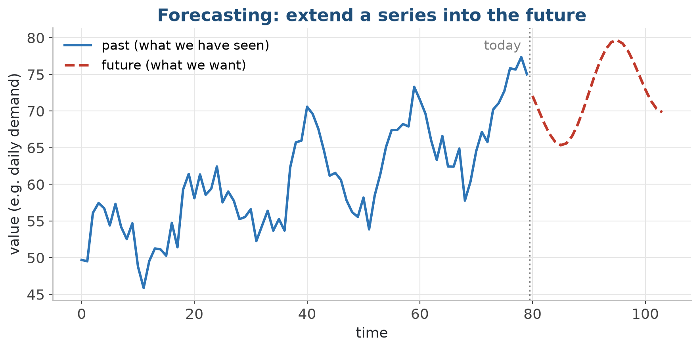
Everything left of 'today' is observed; everything right is what we predict.
Where forecasting earns its keep
- Demand: how many units to stock next week (Flipkart, Big Bazaar, our AC brand).
- Prices: where a stock or a commodity might move (Nifty, mandi prices).
- Load: electricity or server load by the hour (power grids, data centres).
- Revenue: quarterly planning and budgeting for almost any business.
- Every one is the same shape: guess the near future of a number from its own past.
A forecast is a model of the past, pointed forward. If the past holds no usable pattern, no algorithm can invent one.
2 · A series is three simple things
Three ingredients in almost every series
- Trend: the slow drift up or down over time.
- Season: a pattern that repeats on a fixed period — weekly, monthly, yearly (the summer AC spike).
- Noise: the irregular leftover we cannot explain.
- Many real series are simply trend + season + noise, added together.
Pulling a series apart
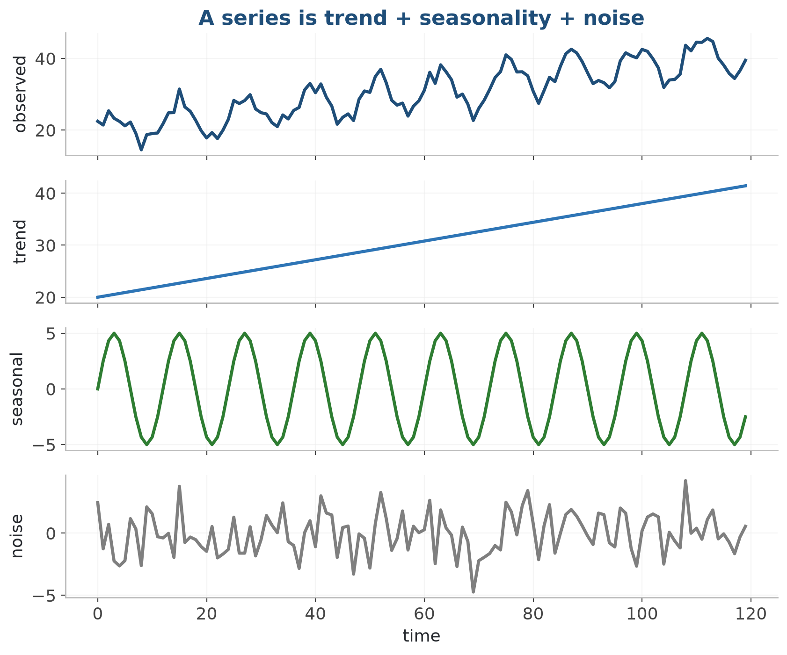
Top: the messy observed series. Below it: its trend, its season, and the noise.
Build a series from trend + season + noise
- Three lines — trend, season, noise — added together ARE the series we forecast.
CODE np.random.seed(0) # same wobble every run time = np.arange(120) # 120 monthly steps trend = 20 + 0.18 * time # slow upward drift season = 5 * np.sin(2 * np.pi * time / 12) # repeats every 12 months noise = np.random.normal(0, 1.5, 120) # random wobble series = pd.Series(trend + season + noise, index=pd.date_range("2010-01-01", periods=120, freq="MS")) print(series.head()) OUTPUT ▸ 2010-01-01 22.646079 2010-02-01 23.280236 2010-03-01 26.158234 2010-04-01 28.901340 2010-05-01 27.851464 Freq: MS, dtype: float64
From what you see to what you reach for
- What you see
- What you reach for
- See a slow drift (trend)?
- Flatten it (ARIMA's 'I'), or use Holt.
- See a repeating season?
- Use seasonal ARIMA or Holt-Winters.
- Mostly noise around a flat level?
- Keep it simple; do not over-model.
- Swings that get calm then wild?
- That is changing volatility — GARCH territory (a peek later).
3 · Two ways today leans on the past
AR and MA — the two building blocks
- AR (AutoRegressive): today leans on recent VALUES of the series.
- MA (Moving-Average): today leans on recent SURPRISES (shocks).
- Both are just weighted averages over time — recent stuff counts, older stuff counts less.
- ARIMA is built by combining these two ideas (plus flattening the trend).
AR: today leans on the recent days
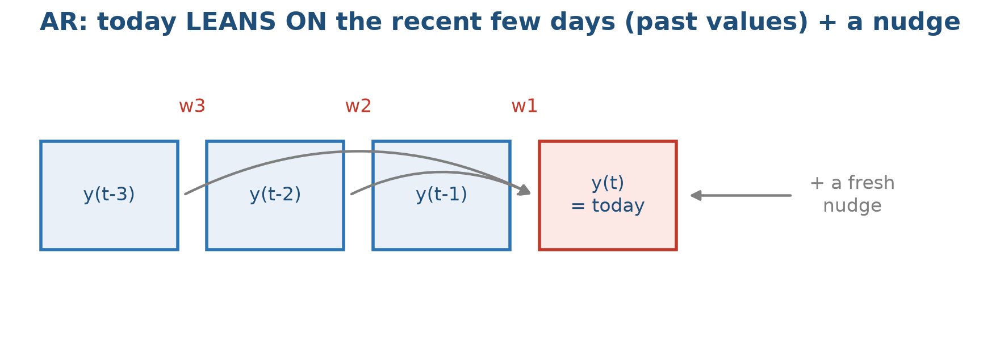
today = a weighted blend of the last few actual values + a fresh nudge.
AR(1) — today leans on yesterday
- today = a base level + a slice of yesterday + a fresh nudge
- X(t) — today's value; X(t-1) — yesterday's value
- φ (phi) — how much of yesterday carries into today
- ε (epsilon) — the random shock: the part nothing explains
- c — the level the series sits around
AR(2) — reach back one more day
- Same sentence — now the last TWO days each get their own weight.
- φ1 — the weight on yesterday; φ2 — the weight on the day before
- The p in AR(p) is simply how many days back you reach
AR's fingerprint on the plots
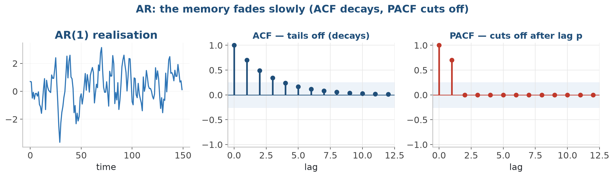
A realisation on the left; the two autocorrelation plots on the right.
MA: today leans on the recent surprises
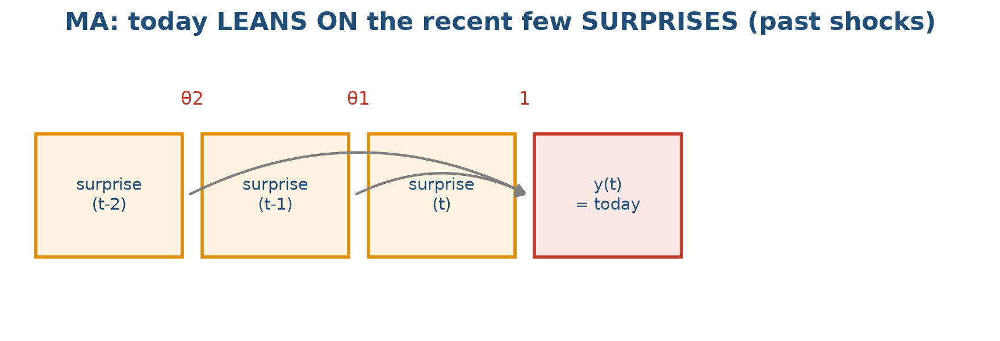
today = a weighted echo of the last few surprises the series got.
MA(1) — today leans on yesterday's surprise
- today = a base level + today's surprise + an echo of yesterday's
- ε(t) — today's shock; ε(t-1) — yesterday's shock
- θ (theta) — how loudly yesterday's surprise still echoes today
- Notice what changed: the X's on the right became ε's
MA's fingerprint — the mirror of AR
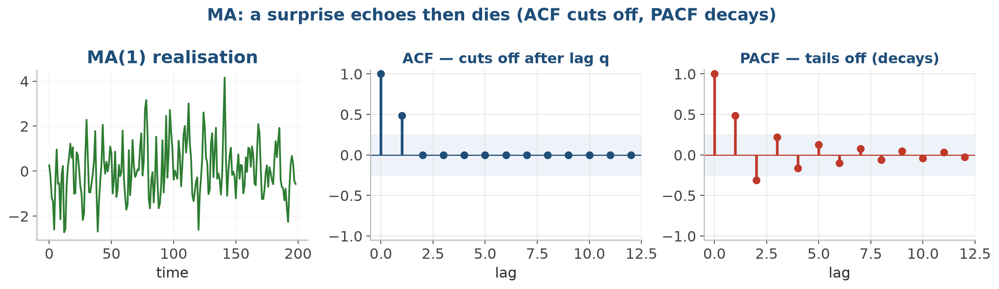
Exactly the mirror image of the AR fingerprint.
AR vs MA — the one-line difference
- AR — leans on recent VALUES
- today looks like its own recent values
- like momentum: yesterday pushes today
- PACF cuts off (after lag p)
- ACF tails off (fades slowly)
- MA — leans on recent SURPRISES
- today carries an echo of recent shocks
- like a fading echo of a surprise
- ACF cuts off (after lag q)
- PACF tails off (fades slowly)
ARMA(2,1) — both ideas in one line
- Two past values (the AR part) plus one past surprise (the MA part).
- The φ terms are AR; the θ term is MA — that is the entire model
- ARMA(p, q): p past values, q past surprises
- Still missing: what to do when the series has a trend
4 · Flattening a trend first (the 'I')
Why we flatten the trend first
- AR and MA only behave on a 'flat' series — one whose average and spread stay steady over time (the word is stationary).
- A trending series is NOT flat: its average keeps climbing.
- The fix, called differencing: look at the CHANGE from step to step, not the level itself.
- A steady climb in the level becomes a roughly flat series of changes.
Differencing in one picture
- d = 0: already flat (e.g. daily returns).
- d = 1: one climb to remove — most common.
- d = 2: a climb in the climb — rare.
- Difference the MINIMUM needed; confirm with a test, not just the eye.
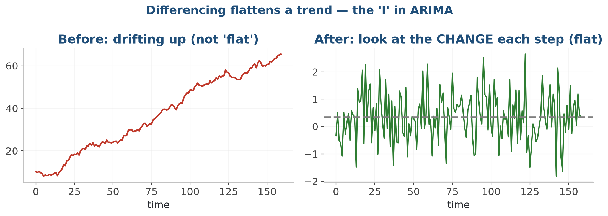
Left: a wandering, climbing series. Right: its step-to-step changes sit flat around zero.
The 'I': model the change, not the level
- Stop modelling the price. Model how much the price moved.
- P(t) — the level: a price, a demand, a temperature
- Y(t) — the step-to-step change; this is what we model instead
- Do it once (d = 1) and a steady climb becomes a flat series
Difference once, and the trend vanishes
- A p-value under 0.05 means stationary: one difference takes 0.999 straight down to 0.0.
CODE from statsmodels.tsa.stattools import adfuller # .diff() = each month minus the one before; drop the first (no 'before') differenced = series.diff().dropna() # adfuller returns several numbers; [1] is the p-value print("ADF p-value, original series :", round(adfuller(series)[1], 3)) print("ADF p-value, differenced series:", round(adfuller(differenced)[1], 3)) OUTPUT ▸ ADF p-value, original series : 0.999 ADF p-value, differenced series: 0.0
5 · Putting it together — ARIMA
ARIMA(p, d, q) in plain words
- AR(p): use p recent values.
- I(d): difference d times to flatten the trend (I = integrated).
- MA(q): use q recent surprises.
- Three small whole numbers — p, d, q — describe the whole model.
ARIMA(2,1,1) — the whole thing in one line
- The same ARMA line — written for the CHANGES Y, not the levels P.
- The only new thing: X became Y, the differenced series
- 2 = p (past changes), 1 = d (differenced once), 1 = q (past surprises)
- Fitting means letting the computer choose c, φ1, φ2 and θ1
If you remember one line, remember this one
- That is ARIMA, in English.
- past changes — the AR part
- past forecasting mistakes — the MA part
- after differencing, so the series is flat — the I part
The recipe: identify, fit, check, forecast
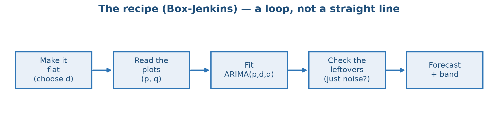
Read the plots, fit, check the leftovers, forecast — and loop back if the check fails.
Fit ARIMA(1,1,1) and forecast 24 months
- One call fits the model; get_forecast extends it — the next months settle near 40.
CODE from statsmodels.tsa.arima.model import ARIMA # order = (p, d, q) = (1 past value, difference once, 1 past shock) fit = ARIMA(series, order=(1, 1, 1)).fit() # the single best-guess line for the next 24 months forecast = fit.get_forecast(steps=24).predicted_mean print("AIC:", round(fit.aic, 1)) print(forecast.head()) OUTPUT ▸ AIC: 593.2 2020-01-01 40.577113 2020-02-01 40.697487 2020-03-01 40.750408 2020-04-01 40.773674 2020-05-01 40.783903 Freq: MS, Name: predicted_mean, dtype: float64
Reading the plots to pick p and q
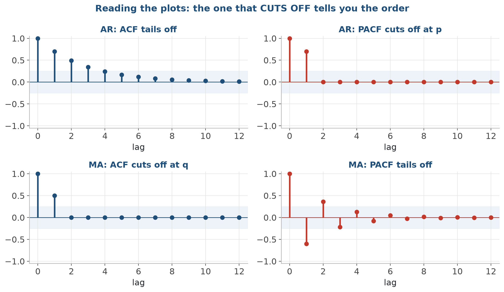
The one that CUTS OFF tells you the order; the one that fades tells you the type.
How to read the plots — a quick guide
Fit, compare, and check
- Once p, d, q are guessed, the library fits the exact weights for you.
- Compare candidate models with a score called AIC — lower is better; it rewards fit but penalises extra clutter.
- Then CHECK the leftovers: they must look like pure random noise.
- A helper (auto_arima) can search the numbers for you — but always sanity-check what it picks.
Check the leftovers are just noise
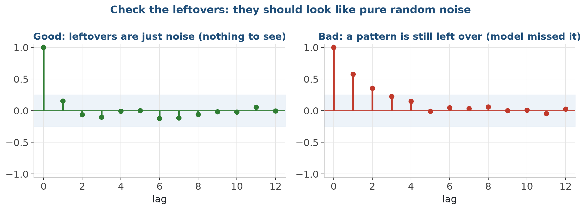
Left: clean leftovers, nothing to see. Right: leftover pattern means the model missed something.
6 · A gentler idea — exponential smoothing
A different, simpler philosophy
- Forecast = a weighted average of the past observations.
- But the weights fade: recent points count most, old points fade away.
- One knob, called alpha, sets how fast the memory fades.
- No flattening, no plot-reading — much less fuss, surprisingly hard to beat.
The weights fade away
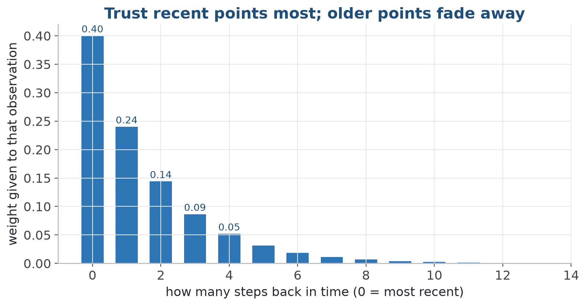
The most recent observation gets the biggest weight; each older one gets less.
Simple, then Holt, then Holt-Winters
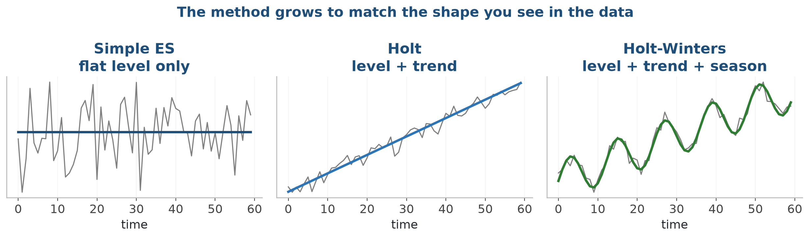
Add a trend piece, then a seasonal piece, as the data needs.
Holt-Winters on a seasonal series
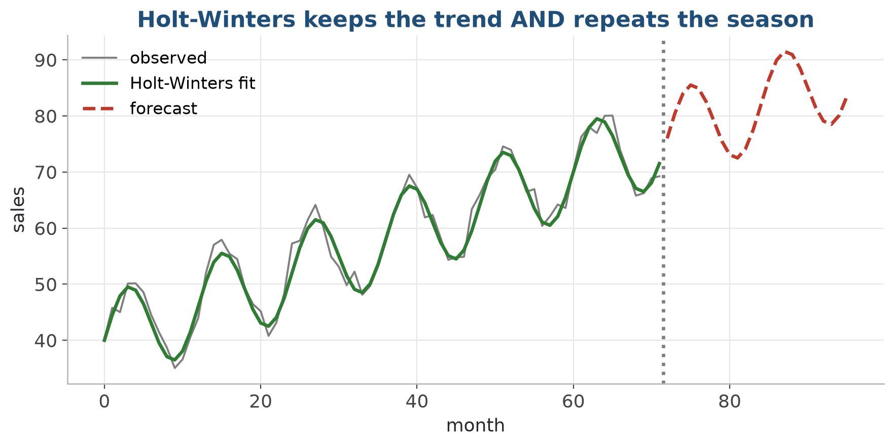
It tracks the rising trend AND reproduces the repeating season, then extends both.
Compare Simple, Holt, and Holt-Winters
- On a series with BOTH trend and season, Holt-Winters' error is a fraction of the others'.
CODE from statsmodels.tsa.holtwinters import ( SimpleExpSmoothing, Holt, ExponentialSmoothing) simple = SimpleExpSmoothing(series).fit() # level only holt = Holt(series).fit() # level + trend winters = ExponentialSmoothing(series, trend="add", seasonal="add", seasonal_periods=12).fit() for name, m in [("Simple ES", simple), ("Holt", holt), ("Holt-Winters", winters)]: mse = np.mean((series.values - m.fittedvalues.values) ** 2) print(f"{name:13}: {mse:6.2f}") OUTPUT ▸ Simple ES : 14.72 Holt : 15.35 Holt-Winters : 2.70
When to reach for which
- Reach for exponential smoothing when
- you want a fast, robust baseline
- a clear trend and/or season dominate
- you value simplicity and easy explaining
- you want less tuning and diagnostics
- Reach for ARIMA when
- the fine autocorrelation structure matters
- you want a statistically principled model
- you will read the plots and check leftovers
- the series is flat after differencing
Both ARIMA and exponential smoothing are baselines worth beating. Always run them first — a fancy model that cannot beat them is not worth its complexity.
7 · A forecast is a fan, not a line
A forecast is a fan, not a line
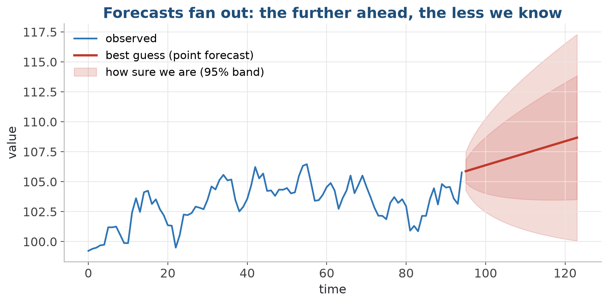
The band widens the further out you look — further ahead, less certain.
Never sell a point forecast as the truth
- Report the band, not just the single number.
- A wide band is honest, not a failure — it tells the decision-maker the risk.
- 'Sales next quarter: 100, likely between 80 and 120' beats a bare '100'.
- The band comes from the model's own estimate of the noise, compounded over the horizon.
A quick peek: GARCH (not built today)
- ARIMA predicts WHERE the series goes.
- GARCH predicts how WILD it will be.
- Standard tool for risk and option pricing in finance.
- Name only today: arch_model(...). A full course of its own.
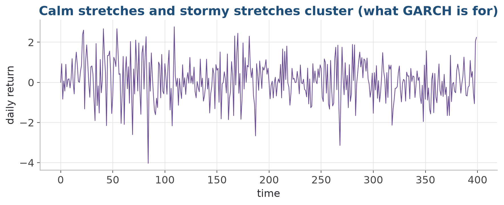
Quiet stretches and violent stretches cluster together — GARCH models that.
Forecasting pitfalls
- Avoid
- Forecasting a trending series without flattening it first
- Cranking p and q up to chase a prettier fit
- Skipping the leftover check
- Forcing a season that is not really there
- Reporting a single number with no band
- Do instead
- Difference (and test) until the series is flat
- Prefer the smallest p, q; compare with AIC
- Always check the leftovers are pure noise
- Add a season only if you SEE one in the picture
- Always report the prediction band
Forecast a series — and test on the latest slice
- Split time series in DATE order (never shuffle) and test on the most recent slice.
CODE from statsmodels.tsa.holtwinters import ExponentialSmoothing fit = ExponentialSmoothing(y, trend="add", seasonal="add", seasonal_periods=12).fit() forecast = fit.forecast(12) # next 12 steps from statsmodels.tsa.arima.model import ARIMA ARIMA(y, order=(1, 1, 1)).fit().forecast(steps=12)
Lab: forecast the Nifty 50 and compare two methods
- In the lab: forecast the Nifty 50 daily series with an ARIMA model AND an exponential-smoothing model on the SAME data, then judge them honestly side by side on days they were never shown.
- 1. Notebook 01: build a monthly demand series you fully understand, flatten it, fit ARIMA, check the leftovers, forecast with a band.
- 2. Notebook 02: meet the exponential-smoothing family — simple, Holt, Holt-Winters — and see which shape of data each one suits.
- 3. Notebook 03 (lab): pull the Nifty 50 daily series (with an offline fallback) and plot it.
- 4. Flatten it, read the plots, fit ARIMA; fit exponential smoothing on the same series.
- 5. Compare both forecasts on held-out days; plot both with their prediction bands.
- Deliverable: a notebook on GitHub: ARIMA vs exponential smoothing on Nifty 50, with leftover checks and prediction bands.
Key takeaways
- Forecasting extends a series forward using only its own past.
- See a series as trend + season + noise — that alone guides the method.
- AR leans on recent values, MA leans on recent surprises; both are weighted averages over time.
- ARIMA(p, d, q): flatten, read the plots, fit, check the leftovers, forecast.
- Exponential smoothing (Holt-Winters) is a simple, strong baseline — try both.
- Always report a band: a forecast is a fan, not a line.
Code & further reading
- Code: github.com/bp-course/applied-maths-in-industry › S15_forecasting/
- Notebooks for this session
- Data
- Reading
01_forecast_with_arima.ipynb 02_exponential_smoothing.ipynb 03_nifty_arima_vs_smoothing.ipynb Nifty 50 daily series — pulled with yfinance, with a synthetic numpy fallback so it always runs offline Small synthetic series (trend + season + noise) built inside the notebooks New to code? primers/python_in_15_minutes.md Want today's idea in one page? primers/time_series_and_forecasting.md Hyndman & Athanasopoulos — Forecasting: Principles and Practice (free at otexts.com/fpp3) statsmodels: Time Series Analysis (ARIMA & ETS) arch package docs (GARCH) — for the volatility peek
Next session
- S16 — Portfolio optimization with CVXPY. We move from predicting ONE series to choosing the best MIX of many, with a bit of optimization.